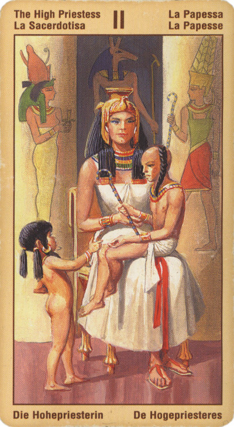

Жрица
Жрица стоит у входа в царство внутренней мудрости, сознания и потустороннего мира. Верховная Жрица представляет магическую силу неподвижности и глубины.
Могущество Мага в большей степени направленно на внешний мир, в то время как сила Жрицы является связующим звеном с силами потустороннего мира.
Верховная Жрица представляет внутренние различия между глубинными инстинктами и внутренней мудростью. Справедливость же представляет эти различия в более рациональной, внешней форме, в виде принятия справедливых решений.
Жрица олицетворяет наши неосознаваемые силы - интуицию, предчувствие, часто необъяснимую, но вполне твердую уверенность в чем-то. Это - ключ к той таинственной истине, которая ускользает от логически мыслящего разума. Ее светлая сторона это выражение терпения, понимания, снисхождения, доброты и умение прощать, использование сил подсознания на благо людям - ради помощи, исцеления, ясновидения.
Теневая же ее сторона соответствует архетипу "темной сестры" использующей свои душевные силы, чтобы соблазнять других, заманивать их в ловушки или еще как-то вредить им.
Создается такое впечатление, что Верховная Жрица преграждает нам путь вперед. Не слишком торопитесь идти вперед в своем путешествии. Истинная пассивность, которую представляет собой Верховная Жрица, обладает немалым потенциалом и может быть очень плодотворной, при этом ее не надо путать со слабостью или инертностью.
Астрологически трансляцией скрытого в явное управляет Луна, с которой и соотносится данная карта. Это та изначально данная форма, которую принимает в мире невидимая волна.
Связуя космос и человечество, эту волну небесной воли транслирует сквозь себя Жрица.
В прямом положении карта Жрица символизирует интуитивное проникновение в суть новых решений и осмысление скрытых доселе факторов, влияющих на человека и его жизнь (цели, работу; увлечения, семью). Это также и неосознанные влияния вашей психики на окружающих и обстоятельства.
Не исключено, что вы сами каким-то образом, непознаваемо оказываете влияние на ваше окружение.
Вы напряженно пытаетесь понять "скрытый" смысл чего-либо (поступка, события), и это сопряжено с трудностями. И... именно здесь вам и стоит прислушаться к вашей интуиции!
Склонность к таинственности, магии - если такая женщина встанет на путь магии - будет "серым"магом. Ни на стороне добра, ни на стороне зла. При всей положительности, иногда слишком жертвует собой на благо других, пренебрегает собственными возможностями. Мужчинам эта карта советует обратиться за подсказкой по ситуации к женщине, к специалистам в эзотерических практиках.
Если 2-й Аркан выпал в раскладе мужчины, перед вами - человек, не склонный торопиться с принятиями решений. Поэтому, если вы ожидали от него каких-то энергичных действий и шагов, вам стоит распроститься с вашей надеждой и поискать иной выход из ситуации.
Для бизнесменов – прогноз, благоприятный в отношении дел, но требующий задуматься об отношениях с партнером (партнершей).
В перевернутом положении Жрица сигнализирует о проблемах, являющихся результатом недостатка проницательности и предвидения. Это также поверхностные знания, самонадеянность и зазнайство. Для женщины - невозможность сотрудничества с особами своего пола, для мужчины - неприятие таких женских черт характера, как нежность, мягкость, сентиментальность, заботливость. Еще одно значение карты - физиологическая страсть.
Помните, однако: при негативном окружении или в перевернутом виде карта «Верховная жрица» может означать, что вам свойственны такие исконно женские хитрости, как стремление устроиться в жизни за счет других, не прилагая к этому никаких усилий. Или же - желание «плыть по воле волн», не задумываясь особенно о том, куда принесет вас течение.
Отрицательное значение: невежество, предрассудительность, склонность к сплетням, страх принимать решения. Излишняя мечтательность.